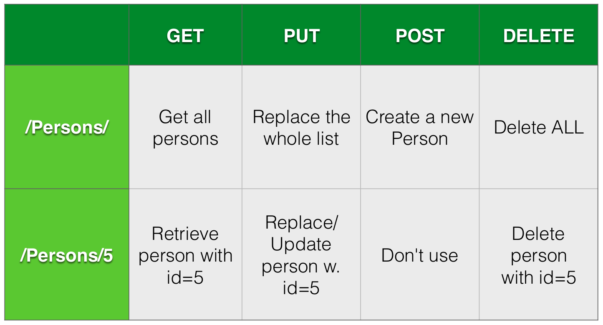

Code Sensei
The problem: RPC
There is a simple open standard protocol:
HTTP
Resources
Verbs
Error Handling
Representational State Transfer
RPC Over HTTP
Very popular, everybody uses it, incl. Facebook, Twitter, Paypal, etc. etc.
Data format: JSON, XML, others..
Let's say I have a Persons DB table. How do I serve this over REST?

GET en PUT should be idempotent
And true restfulness is not a simple thing
To consume REST APIs we use requests
Install this library using
python -m pip install requests
Note: this is not necessary on anaconda and pythonanywhere.
import requests
apiKey = "80559f68dddf48a689a7d5d5d9074522"
r = requests.get(f'https://newsapi.org/v2/top-headlines?country=nl&apiKey={apiKey}')
print(r.status_code)
print(r.text)
# output:
200
{"status":"ok","totalResults":34,"articles":[{"source":{"id":null,"name":"Dpgmedia.nl"},"author":null,"title":"Sinterklaas is weer in het land!",...
Use response.json() to convert from JSON text data to a Python
datastructure.
import requests
r = requests.get(f'https://newsapi.org/v2/top-headlines?country=nl&apiKey={apiKey}')
data = r.json()